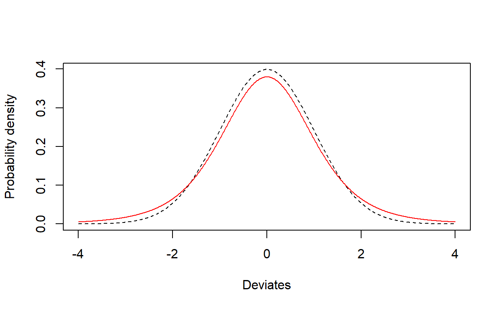
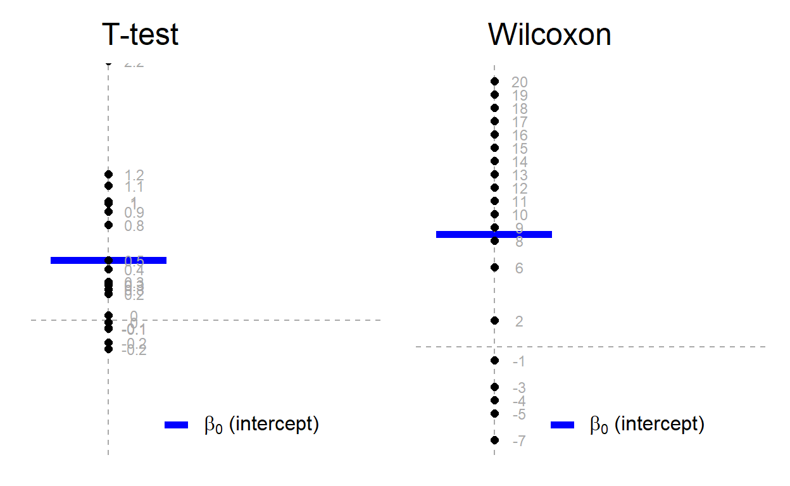
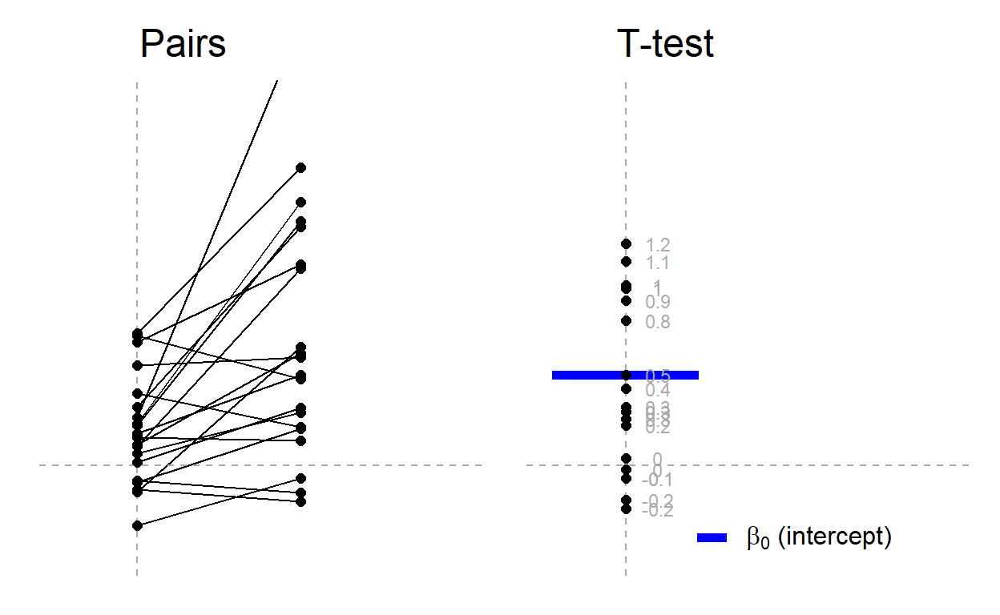
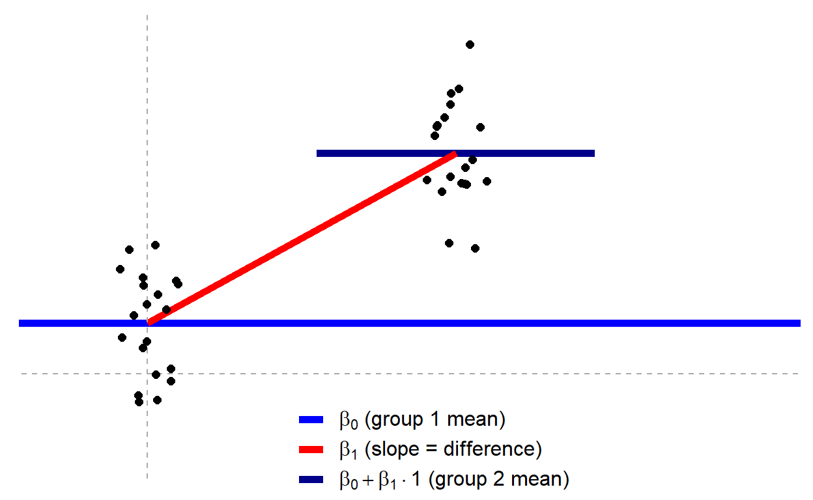
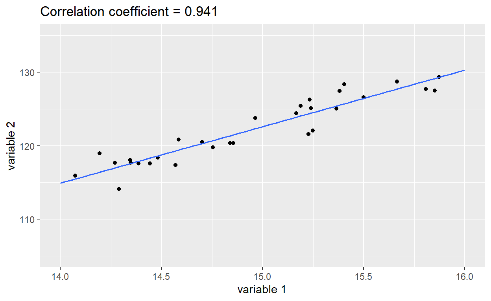
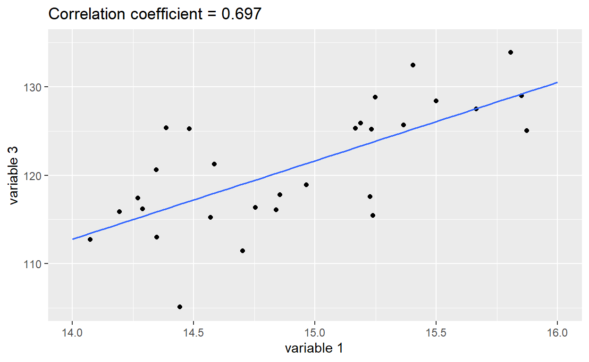

“Please do stats test XYZ”
When you are collecting data for other modules, reading scientific
papers or in your Stage 3 projects, you will often find that a member of
staff is suggesting that you analyse your data with a statistical test
that you have not heard of. However, many of these ‘standard’
statistical tests can be considered to be linear models. If you find it
less confusing to consider them as forms of linear models, then feel
free to stick to that. If you prefer to use the built-in R commands for
each test, then that is fine also. What matters is the
underlying hypothesis that you are trying to test. This will
determine the exact structure of your lm or
glm function, or which built-in R command to use
instead.
This website simply compares some of the commonly encountered statistical tests in their linear model format and their built-in format. You can find full details of this philosophy for teaching statistics at https://lindeloev.github.io/tests-as-linear/
Overall philsophy
The key thing to remember is that all these tests can be considered within the (generalised) linear model framework. Most can be considered as linear models, although there are a handful that need generalised linear models (GLMs). We have not considered GLMs in these sessions but some of you may see them in papers or will attempt them next year. The overall philosophy is unchanged, i.e.:
\[Response = Explanatory + \epsilon\]
where
- Response is what you have measured, you assume it changes as a result of e.g a treatment you have applied
- Explanatory is typically your “treatment” in a laboratory experiment etc.
- \(\epsilon\) is the unexplained noise in your data
What can be a little confusing is that some of the simpler tests do not need you to explicitly include an explanatory variable. Some of these simple tests also may require two response variables. We will cover these examples as we go through this website.
Although this website shows you both the conventional built-in
command R has for these tests, in common with all statistical software,
the big advantage of the lm() or glm()
approach is that it helps you understand that these tests are all
variations on a theme, and that really what you are trying to do in
every case is fit a statistical model to your data. The
data format is consistent for lm() and glm()
whereas it is inconsistent for the built-in tests, and plotting of
graphs is easier when data are prepared for lm() and
glm(). It is strongly encourage that you
to use lm(), and occasionally glm() to do
these tests, rather than the conventional built-in commands.
t-distribution
A lot of ‘standard’ statistical tests use the t-distribution, and you will often hear people refer to ‘t-tests’, ‘paired t-tests’, ‘one-sample t-tests’. These are generally introduced early in statistics courses, as they are all relatively simple tests, although you have to know when to apply each one. A disadvantage is that in Stage 3, when supervisors ask students “How are you planning to analyse your data?” the most common answer is “Oh, perhaps a t-test” because this is the first stats test people learnt and hence the easiest to remember. But first a quiz about drinks (which yes, does link to t-tests)…
Even if you managed to find the correct answer, you’re probably puzzled (unless you already know the strange story). Keep reading…
The t-distribution
This distribution looks very similar to a normal distribution in that it forms a bell-shaped curve. The differences are only obvious when one is laid on top of the other, with the t-distribution in red:

The two curves are very similar, with the t-distribution having “fatter” tails. It is generally known as Student’s t-distribution. It was developed by W.S.Gossett in 1908 who worked for Guinness Breweries in Dublin
Gossett wanted to distinguish between the quality of Guinness stout based on the different types of malt used in the brewing process, and developed the t-distribution instead of the normal distribution as it was slightly more robust with small sample sizes. However, Guinness Breweries wanted to keep the method secret, and would not let him publish the technique. Gossett then published it under the pseudonym “Student” and the name has stuck.
You will often encounter t-statistics, often to check whether an estimated parameter from a model, such as an intercept or gradient, differs from zero. If the parameter is big (large negative or positive value), then the t-statistic will be statistically significant (p<0.05), whereas if the parameter is roughly zero, the t-statistic will be non-significant (p>0.05). You may encounter several different types of t-tests, as well as their non-parametric equivalents.
Parametric and non-parametric tests
The most useful and powerful statistical tests are conventional parametric tests, which are used when your data are normally distributed. However, many statistical tests exist in non-parametric versions of their conventional parametric versions, which can be used when you have highly skewed data with a few extreme outliers. When data is highly skewed or contains a few extreme outliers, it often does not follow a normal distribution, which is seen as a shift away from the bell-shaped curve. We call this type of distribution a non-normal distribution.
Non-normal distributions can take up a number of different forms and be caused by a number of processes. They can result from a number of different scenarios:
- a natural biological process can give rise to a non-normal distribution e.g. growth rate of bacteria,
- outliers which cause the distribution to become either left or right skewed,
- insufficient data which means a normal distribution cannot be easily recognised,
- your data may be bimodal or multimodal when plotted so in this case you need to think whether those different modes relate to something biologically meaningful (i.e. a variable you have or have not measured).
Non-parametric tests can be used on data which are not normally
distributed so do not follow a normal distribution. They are based on
rankings rather than the original raw data. So they
would convert the numbers 5.2, 1.8, 8.9 into
2, 3, 1 to represent their order. Whilst
they can be useful when your data are very badly skewed, they are far
less powerful in detecting patterns.
Whenever possible, use conventional parametric tests rather than non-parametric rank-based tests as rank-based methods are less useful.
Theory: rank-transformation
The R command rank simply takes a list of numbers and
“replaces” them with the integers of their rank (1st smallest, 2nd
smallest, 3rd smallest, etc.). So the result of the rank-transformation.
A signed rank is the same, just where we rank according to
absolute size first and then add in the sign second.
To get a better understanding of ranked data, play with the following
code, changing the values of the data used in my_tiny_dat.
There is not a built-in R function for signed-ranks, but we can easily
create one:
signed_rank <- function(x) sign(x) * rank(abs(x))
This looks a bit cryptic, but it creates your own function, called
signed_rank() to which we give a set of numbers. The
easiest way to see what it does is to create it, and run it with some
example code as shown below:
# Create a simple function for signed_rank
signed_rank <- function(x) sign(x) * rank(abs(x))
# Example dataset
my_tiny_dat <- c(3.6, 2.4, -6.3, -4.1, 8.2)
my_tiny_dat # Original values
rank(my_tiny_dat) # Rankings are 1 for lowest (-6.3) to 5 for the highest (+8.2)
signed_rank(my_tiny_dat) # Rankings -4 for lowest to +5 for highest, as +/- sign includedImportant Whenever you want to do a signed-rank
test, remember to include the single line from above to create your
signed_rank() function.
Creating ranks is all you need to do to convert most parametric tests into their “non-parametric” counterparts! This means that many “non-parametric tests” are very similar to the conventional parametric counterparts, but use rank-transformed data. However, remember that as they convert your data into “first”, “second” etc. you are losing information so they are less powerful.
One-sample t-test
This is the simplest form of t-test. You are basically trying to determine whether:
- the mean of your set of numbers is different from zero (either positively or negatively), or
- whether the mean of your set of numbers is roughly the same as zero
The following diagram summarises the idea for the one-sample t-test. The question you are addressing is whether the blue horizontal line significantly differs from zero. The diagram for the left shows the conventional parametric one-sample t-test, that on the right the non-parametric equivalent using ranks, known as the Wilcoxon test. The one on the left is most useful.

In the above plot, notice how the original values are showing for the t.test plot, whereas the ranked (ordered) values are showing for the non-parametric Wilcoxon plot.
One-sample t-test
This is how you can check whether your mean value for your data is
different from zero, using the conventional built-in
t.test() function, or when expressed as a linear model with
lm(). Throughout this course you have been encouraged to
think in terms of:
\[Response=Explanatory+\epsilon\]
You are probably a bit puzzled, as if all we are doing is checking
whether our data differs from zero, what is the
Explanatory. Think about some of the results of the
simple linear models you created in Practical 2 using the
lm() function. It always outputs a variable called
(Intercept). R does this automatically. If you have
categorical responses, the Intercept is the overall mean (average) of
all your response data. So in reality R is actually fitting:
\[Response = Intercept + Explanatory + \epsilon\]
but you don’t need to type in the word “Intercept” do get it to do
this. In fact R uses the number 1 to indicate the intercept
and automatically assumes it is there. So the two lines
simple_lm <- lm(y ~ x, data=my_dat)
and
simple_lm <- lm(y ~ 1 + x, data=my_dat)
are exactly the same.
But we don’t have any explanatories?! If all you
want to do is see if the overall average of your numbers differs from
zero, you do not of course have a set of explanatories. You can simply
tell R to only fit the (Intercept) term, which as we have
just seen will be the overall average. So we simply need something
like:
simple_ttest <- lm(y ~ 1, data=my_dat)
R has a built-in function called t.test() which does the
same thing, but the “response ~ explanatory” philosophy is clearer.
Data for one-sample t-test
The simplest thing is for you to enter a single column of values into
Excel (include a column header with a name, no spaces). Then remember to
save it in .CSV format into your
Data sub-folder in your
MST2204 folder, e.g. mynumbers.csv. Then you
simply need:
y <- read.csv("Data/mynumbers.csv")
to import your column of values into R in the usual way with
read.csv().
Example of one-sample t-test via both built-in command and linear model
Let’s try the two functions, t.test() and
lm() on a dataset y with 50 values (you will
see 49 degrees of freedom as a result).
# Check what the mean of your set of 50 numbers is
mean(y)
# Built-in t-test
a <- t.test(y)
a
# Equivalent linear model: intercept-only
b <- lm(y ~ 1)
summary(b)Although the formatting of the output from the two tests is slightly
different note that the mean (shown as (Intercept) Estimate
for lm), t-statistics and p-values etc. are almost
identical. As the p-value here is greater than 0.05, we
can state that there is no significant difference between the average of
these data -0.0952159 and zero.
Wilcoxon test
This is the non-parametric (rank-based) equivalent. Here, we use a
signed-rank method. We can use the wilcoxon.test() or
t.test() functions, but these are yet more functions to
remember. Probably easier to think of it as a standard linear model, use
lm() and add the signed_rank() function. The
following give the same results:
# a) Built-in
wilcox.test(y)
# b) Equivalent linear model
b = lm(signed_rank(y) ~ 1) # Same lm model as above, just on signed ranks
summary(b)The p-statistics are approximately the same for both methods. With
very small sample sizes the wilcox.test() will be slightly
more accurate. Again, the p-value is greater than 0.05,
indicating that your set of numbers is not
significantly different from zero.
Paired t-tests
Sometimes you will have a set of samples that are coupled together in some way. For example:
- You collect water samples upstream and downstream from sewage
outlets from 30 different rivers, and test for the bacterial diversity
in the samples. Now the bacterial biodiversity may well differ between
your individual rivers. What you are really interested in is the
difference in diversity upstream and downstream. So you
first calculate the difference between the bacterial diversity, and then
undertake a
t.testorlmon the result, to see if it is significantly different from zero. - You take blood samples from 15 fish before and after they have received a feed supplement, and want to know if the supplement has any effect on haemoglobin level. Given that haemoglobin is unlikely to be the same amongst all 15 fishes even before you do the study, what you really want to know is whether the difference in haemoglobin before and after the feed is significant from zero.
We can illustrate this idea with the following plot:

The plot on the left shows the original samples, with the pairs (e.g. upstream or downstream of a sewer outflow) linked by lines. The plot above right shows the results of subtracting each pair from the other, that will be analysed to see if the average of these subtractions is significantly different from zero. So, there is a very slight change to our original model for the one-sample t-test of:
\[Response=Intercept + \epsilon\]
to become:
\[ResponseA-ResponseB=Intercept + \epsilon\] For the biodiversity upstream and downstream of sewers in 30 rivers, this equates to:
\[BiodiversityUpstream-BiodiversityDownstream=Intercept + \epsilon\] whilst for the blood haemoglobin in 15 fishes before and after the food supplement it is:
\[HaemoglobinBeforeFeed-HaemoglobinAfterFeed = Intercept + \epsilon\]
Data for a paired t-test
Here is an example of the analysis in R, using either the built-in
t.test() or lm() functions on a dataset of 15
fish with blood haemoglobin, before and after receiving a food
supplement. In this example, the two columns are labelled
before_feed and after_feed, the mean
difference haemoglobin in the fishes before and after being
-0.8412884 . Is this value significantly different from
zero?
# Display the top of the two columns, and summary info
head(fish_dat)
summary(fish_dat)
# Display the average of the difference in the two columns
mean(before_feed-after_feed ~ NULL, data=fish_dat)
# Built-in paired t-test; note use of paired = TRUE
t.test(fish_dat$before_feed, fish_dat$after_feed, paired = TRUE)
# Equivalent linear model. Simply subtract the haemoglobin values for each fish
b = lm(before_feed - after_feed ~ 1, data=fish_dat)
summary(b)Again you can see that the results from the two analyses are very
similar. The syntax of the conventional t.test() function
is a bit clumsy, as you need to specify both the data.frame name
(fish_dat) with the column using the $
specifier. The lm() formulation is much simpler. We set
~ 1 as the explanatory, to indicate that we are only
testing whether the overall mean (of the differences) is zero or not.
Note that the (Intercept) value of -0.8412884
is the average of the differences in haemoglobin, before and after
feed.
As the p-value is greater than 0.05, we assume that the fish feed supplement is not having a significant effect on blood haemoglobin.
Wilcoxon matched-pairs
This is the non-parametric equivalent of the paired t-test. We can
use the same trick as before, of subtracting the values for one pair
from the other in the lm() function, but also using the
signed_rank() function. Remember that you will have to
create the signed_rank() function yourself:
# a. Built-in Wilcoxon matched pairs
wilcox.test(fish_dat$before_feed, fish_dat$after_feed, paired = TRUE)
# b. Equivalent linear model:
b <- lm(signed_rank(before_feed - after_feed) ~ 1, data=fish_dat)
summary(b)Again, you can see that the p-values are fairly similar. Sticking
with the lm() formulation is much simpler conceptually, and
requires slightly less typing. Remember to create the
signed_rank() function yourself before you use it, as shown
on the parametric and non-parametric tests page.
Independent t-test
This is the basic t-test, sometimes referred to as Student’s t-test. Basically you are trying to compare two means to see if they are different:

You might be wondering How does this differ from a standard linear model, with a categorical explanatory variable that contains 2 levels? Well, the short answer is, it doesn’t, it is basically the same analysis with a different name! The long answer is that in simple situations like this it is conventional to report the t-statistic rather than the F-ratio, partly as the t-distribution can correct for small sample sizes (you may have noticed that the t-distribution and normal distribution are very similar, but not exactly the same). So the basic model you are working with is:
\[Response = Explanatory + \epsilon\]
where your Explanatory variable is categorical, with only 2 categories (levels).
Data entry for Student’s t-test
Again, use Microsoft Excel, but save in .CSV format.
However, the way in which you enter your data might be slightly
different:
- for the built-in
t.test()function enter it as two columns, i.e. “wide” data format. The first for one level of your explanatory variable, the second for the other one. The explanatory variable is not explicitly coded, but simply indicated by the two columns. - if using
lm()function, two columns, but in “long” data format. The first column is all of the data, and the second the two categories of your explanatory (factor) variable which has two levels.
The latter is amenable to boxplots, violinplots etc. You can’t do this with the former, so this is another advantage of sticking to the “response ~ explanatory” template.
This example looks at the nerve electro-potential responses in 100 frog muscle samples with and without a cholinesterase inhibitor:
# a. Built-in independent t-test on wide data
# Scroll up and down to view data after running code
print(electro_wde)
summary(electro_wde)
# data from y and y2 are two different columns, y and y2
t.test(electro_wde$control, electro_wde$inhibitor, var.equal = TRUE)
# b. lm
# Scroll up and down to view data after running code
print(electro_lng)
summary(electro_lng)
# Simply use lm in the usual way
b <- lm(electropotent ~ treatment, data=electro_lng)
summary(b)
# An advantage of long format is plotting
gf_boxplot(electropotent ~ treatment, data=electro_lng)The p-values and t-statistics are roughly the same for the two
functions, but sticking to the lm() structure gives greater
consistency and clarity than t.test(). The big advantage of
your lm() approach is also that you can easily plot the
data in the usual way. In the lm() output note that:
- The
Estimateon the row markedInterceptis actually the mean value for the first level of your explanatory, i.e.control(first level becausecforcontrolcomes beforeiforinhibitorin the alphabet) - The
Estimatefortreatmentinhibitoris the difference in the mean value of the two levels of your explanatory. This difference is statistical significant as p<0.05 atp=0.012 - The absolute value of the t-statistic is the same for either the
lm()ort.test()methods
When reporting the lm() results you would write
something like “There was an increase of 0.845 (\(\mu\)/s) in the electro-potential of
muscles receiving cholinesterase (t=2.553, p=0.012, df=98)”.
Note that the t-statistic as well as the p-value is quoted. As you can
see, the t.test() and lm() approaches give
roughly identical results, but the lm() method is much
easier, and amenable to plotting data etc.
Correlation
The most common statistical test for measuring the strength between two continuous variables is a correlation. You’re probably familiar with correlation already. High correlation shows a strong relationship between two variables, and low correlation occurs when there is a lot of scatter and weak relationship. But there are some important considerations we need to think about before we undertake a correlation analysis.
We need to consider the distribution of each of the variables. This is back to understanding whether each continuous variable follows a normal distribution. When both continuous variables follow a normal distribution, this is referred to as a bivariate normal distribution. Therefore, when undertaking a correlation analysis with bivariate normally distributed continuous variables, the relationship you are analysing will be linear. This can be seen in the figures below where a correlation has been undertaken looking at the relationship between variable 1 and variable 2.

The correlation coefficient measures the strength of the linear relationship between two variables and lies between -1 and +1. The closer the correlation coefficient is to 1 the stronger the relationship. If the correlation coefficient is close to 0, then there is no relationship between the two continuous variables. You can see that the correlation is lower on the second plot, where the scatter around the line is much bigger, which would indicate that the relationship is not quite as strong.
You can calculate the correlation coefficient with the
cor() function. Notice that correlation does not
imply causality. Although the plots above show variable
1 on the x-axis and variable 2 on the y-axis, they could
just as easily be the other way round. Note also that the gradients of
the two lines are roughly the same, but that does not affect the
correlation.
# Simple correlation coefficient
cor(var3, var1)
# cor.test function
cor.test(var3, var1, method="pearson")
# Using lm function
c <- lm(var3 ~ var1)
summary(c)
sqrt(summary(c)$r.squared) # or simply sqrt(0.4856)The summary() of the lm() function actually
prints out the R-squared value, which is the % variation explained,
rather than the correlation coefficient. To obtain the correlation
coefficient simply run the sqrt() function on the R-
squared value output from the summary, e.g. sqrt(0.4856) in
this specific example, or the slightly longer
sqrt(summary(c)$r.squared) where c is the
results of your lm() function for a more general
approach.
Play around with the code in the above exercise by swapping var3 and
var1. You will notice that the correlation coefficient, r, is unchanged
irrespective of whether var3 or var1 is first in the lm()
function call.
You will notice that in
cor.test(var3, var1, method="pearson") the method is
referred to as pearson. This is because when these data
follow a bivariate normal distribution a Pearson
correlation is used. If either or both of the variables follows
a non-normal distribution then their joint distribution cannot be normal
and the assumptions of the test cannot be met. It is important to check
the assumptions of the test before undertaking the analyses by plotting
your data as a scatterplot to check that the two variables show a linear
relationship (in this case follow a straight line) and by looking at
boxplots and histograms to check that those data are normally
distributed.
Rank correlation
If you are undertaking a correlation analysis and your data do not follow a bivariate normal distribution, then you can undertake a rank based correlation. Rank correlation is usually referred to as Spearman rank correlation, which is the non-parametric equivalent of a Pearson correlation.
Again, you can do it with the built-in R command, or the
lm() function. For the lm() function we simply
have to rank() the values from lowest to highest first.
Rank correlation is referred to by the Greek letter rho, shown as \(\rho\) .
# Built-in method
cor.test(var3, var1, method="spearman")
# lm
b <- lm(rank(var3) ~ rank(var1))
summary(b)
sqrt(summary(b)$r.squared) # Or simply look at the summary output and sqrt(0.4964)In general try to avoid non-parametric tests when possible, due to their lower statistical power.
One-way ANOVA, two-way ANOVA, ANCOVA
The focus of this module has been learning statistical analysis from
the perspective of a linear model. ANOVA is short for Analysis of
Variance and we went through these statistical tests in practicals 2 and
3. We have used the lm() function because it is the easiest
way of doing the analyses.
- One-way ANOVA
lm(): One explanatory factor (categorical variable) with 3 or more levels. - Two-way ANOVA
lm(): Two explanatory factors (categorical variables) plus their interaction.
Analysis of Covariance (ANCOVA)
Analysis of Covariance is slightly different to ANOVA but crucially
it is still a type of linear model which follows the same rules. ANCOVA
contains two explanatory variables: a categorical variable (factor) and
a continuous variable (sometimes called a covariate) plus or minus an
interactions. ANCOVA still uses the lm() function. The key
concept here is that an ANCOVA can test whether there are differences in
the gradient of the relationship between response variables and the
continuous explanatory variable for multiple levels of the categorical
variable.
For example, if we collect fish from two different locations (e.g. NW and SE), measure their standard lengths and analyse the biochemical composition of their tissue (d13C), we can test whether the gradient and elevation of the lines are significantly different.
In doing this type of analysis it is important to plot your data first.
# plot data first
gf_point(d13c ~ standard_length, col = ~area, data = anr) %>%
gf_theme(theme_classic()) %>%
gf_lm(d13c ~ standard_length, col = ~area, data = anr) %>%
gf_labs(x = "Standard length (mm)", y = "d13c per mil")You can see from the figure that the samples taken from the SE location appear greater than the NW and so is the line we have plotted through our data but are the locations significantly different?
We can then undertake the analysis the same as previously using
lm() function as we have done in the practicals.
# create the linear model using `lm`
m1<-lm(d13c ~ standard_length + area, data = anr)
# look to see whether the variables in the model are significant
Anova(m1)
# we we still need to check whether the assumptions are met
anr_resid <- residuals(m1)
gf_qq(~anr_resid) %>%
gf_qqline()In this example, we have assumed that the two lines are parallel
(i.e. have equal gradients) and that there is no interaction between
standard_length and area. It is good practice
to test for an interaction first. We can look more closely at the
results by using summary() and find the coefficients for
the intercepts and gradients of the lines as well as whether they are
significant.
summary(m1)The table is a combination of what you have seen already when interpreting the linear models with continuous variables and linear models with categorical variables.
The table can be interpreted as follows for those data from the NW area:
intercept=-20.812942- gradient of the line =
0.003331
The interpretation for the SE area is very similar except that the intercept is different:
intercept=-20.812942+0.446764- gradient of the line =
0.003331
The intercept for the SE area is ~0.4 per mil higher
than the NW station. You can see this in the figure where the blue SE
line is higher than the red NW line.
You will find that for Two-way ANOVA with unbalanced data and for
ANCOVA, the most accurate F-values are calculated by using the
Anova() function from the car package which
does Type-II Sums of Squares.
Kruskal-Wallis test
The Kruksal-Wallis test is the non-parametric equivalent of a one-way ANOVA and is used when data are not normally distributed. The test is used when you have 3 or more levels in your categorical variable. The test is based on ranking the data as in the Wilcoxon test but this time it compares the ranked sums within each group.
You can see whether your data follows a normal distribution (bell-shaped curve) by plotting the histograms. In group a and b below, their data are either skewed to the left or right but group c follows a bell-shaped curve. It means that groups a and b are unlikely to be normally distributed. You could give a linear model a go and check the assumptions by looking at the residuals (recommended) but some researchers will undertake the non-parametric Kruskal-Wallis test. The different groups within the categorical variable still need to have similar levels of variability for this test to be undertaken so make sure you check your boxplots if you ever use this test.
# Plot histograms
gf_histogram(~value2|group2, bins= 12, data = D) %>%
gf_theme(theme_classic())
# check the variability with the boxplots
gf_boxplot(value2 ~ group2, data = D) %>%
gf_theme(theme_classic())
# Undertake the Kruskal-Wallis test
kruskal.test(value2 ~ group2, data = D)When reporting a Kruskal-Wallis test, make sure you quote the \(\chi^2\) value, degrees of freedom and the p-value.
Chi-squared tests
Chi-squared tests are based on ‘contingency tables’ which analyse the number of cases across two different variables, and calculate the observed and expected values for each combination, before calculating the overall Chi-squared statistic.
Chi-squared tests often arise in genetics where you are comparing the counts of different individuals with certain observable phenotypes or traits. We haven’t covered chi-squared within the practicals but instruction on how to do them by hand can be found in Analysing Frequencies - Chi-sqaured test section of Experimental Design and Statistics, which you need work through in addition to the example given below.
Example data
Let’s say we want to know whether there is a relationship between hair colour and eye colour in a random sample of students:
| Blue eyes | Brown eyes | |
|---|---|---|
| Fair hair | 38 | 11 |
| Dark hair | 14 | 51 |
Obviously, this is a fairly simple example, and the results are so clear-cut that you don’t really need any fancy statistics, but it is useful to work through the calculations nevertheless. What are the predicted frequencies? The simplest model is that hair and eye colour are independent. It is a nice model, as the maths are straightforward but let’s do this calculation in R.
There are two ways of doing the analysis, either the
chisq.test() function, which requires you to input a table
of data, or via glm() where the data are “long” in two
columns.
First, as a table:
haireye_table <- data.frame( blue = c(38, 14), brown = c(11, 51))
haireye_table
chisq.test(haireye_table)
# The result is highly significant, but note the chi-squared is slightly different
# to the one we calculated by hand. R automatically applies 'Yates correction'
# To remove this:
chisq.test(haireye_table, correct = FALSE)Now the alternative approach, using a glm(). GLM stands
for generalised linear model which is an extension to the type of linear
models we have been working with during the practical sessions. We
haven’t covered these but some of you will be interested to learn how to
do them in R.
Here the data are in ‘long’ format and we use the \(response ~ explanatory\) style, plus
interaction. As you are working with count data, specify
family = "poisson". Finally, we use the
Rao correction in the anova call, as this approximates
to \(\chi^2\) better:
haireye_lng <- data.frame( counts = c(38, 14, 11, 51),
eye = c("blue", "blue", "brown", "brown"),
hair = c("fair", "dark", "fair", "dark"))
haireye_lng
# glm equivalent
haireye_glm <- glm(counts ~ eye + hair + eye:hair, family = "poisson", data=haireye_lng)
anova(haireye_glm, test="Rao")The line to focus on is the row labelled eye:hair for
the interaction (relationship) between eye colour and hair colour, which
is what we are interested in. The column labelled Rao
contains the \(\chi^2\) value which is
the same as our calculated 35.334, and highly significant.
Final comments
Hopefully this section has shown you that many “traditional” statistical tests fall neatly into the (generalised) linear model framework, so that you don’t feel quite so overwhelmed by all the different methods out there.
You can find a good review of the subject for teaching statistics by this approach at